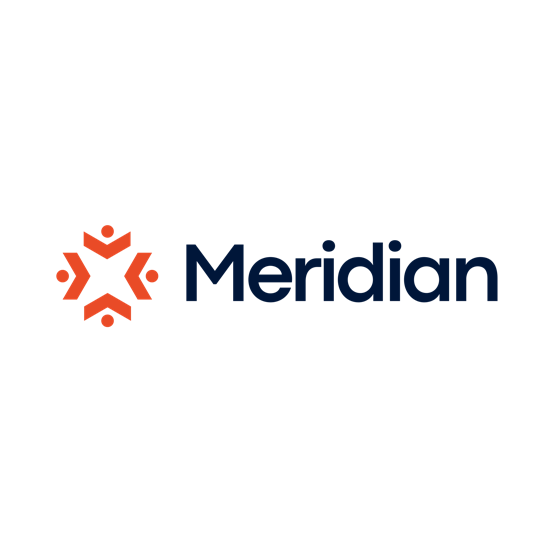

Below I've outlined the end to end process, built on one real prospect so you can see exactly what a nonprofit CEO receives and why it works. Nothing below is mocked up: every number is from public filings, every email and doc is what would genuinely send, with your review and approval.
The goal is to reach nonprofit CEOs with a pattern disrupt: something specific enough that they actually stop and read it. That is the entire job of what follows.
We naturally prioritise the orgs most reliant on government grants, since that reliance is public record, down to the dollar.
The worked example throughout is a real organisation: Wind Youth Services in Sacramento, youth homelessness, about $2.8M a year, roughly 89% government-funded.
How one lead converts
We read public IRS filings to find nonprofits living on government grants. Where a sector's federal funding is genuinely being delayed or pulled, as it is for youth homelessness right now, that pressure becomes the opening line. Where it isn't, we don't claim it: each sector's funding picture gets verified before it is ever used in an email. Either way, the reliance itself is public record, down to the dollar, so we target on it precisely instead of guessing.
For example: youth services. One pass narrowed the field like this:
Wind came out at 89% government-funded. Every one of those figures is read straight from IRS Form 990, line 1e, filed publicly. The same screen runs on any nonprofit category we point it at.
No blast, no fake "I loved your recent post" personalisation. One short email, built on that organisation's own numbers, naming the exact pressure they're under. Here is the one Wind's CEO would receive.
Subject: government funding
Miren, approx 9 in 10 dollars of your funding is government, and federal youth-homelessness grants are being delayed or pulled this year. We've helped [300+] nonprofit CEOs move off reliance on grants to individual donors, including {{Onwards' past client most like Wind}}, a {{org type}} from {{area}}. I've made some notes on how we helped them, and how you can start making the same shift before Q4. Can I send them over?
Onwards,
Darren
Every claim traces to a public source: the 89% to their 990, the grant delays to federal award records. Nothing is invented. The highlighted parts are the only places real proof from your clients gets dropped in, which is what the section further down is about.
The email offers notes. If they say yes, this is what arrives, personalised to their organisation and written to earn a 30-minute call, nothing more. It pays the email off, shows the shape of what {{ORG}} did, and reserves the rest for a conversation.
Where Wind's next unrestricted dollar comes from
Miren,
Here are the notes I mentioned.
Around 9 in 10 dollars Wind runs on is government money, and the programs behind it are unstable. The federal Street Outreach round skipped a year, HUD pulled its youth-homelessness funding notice in December, and a partial fix only landed in February. It's the weather every youth-homelessness org is standing in right now.
In the last year on file, everything Wind raised outside government (foundations, companies and individuals combined) came to about $280,000. The channel that produces unrestricted, multi-year money (individual donors) is still almost entirely open to Wind.
What makes me confident about Wind is that you run the only shelter in the region dedicated to runaway homeless youth aged 12 to 17. A donor can see exactly what their money keeps open. I've sat with a lot of CEOs whose work takes three slides to explain. Yours takes one sentence.
We've done this with a lot of nonprofits. The closest to Wind's position was {{ORG}}, a {{org type}} from {{area}}. {{Two years ago}} they were {{~85%}} government-funded, strong program, barely any individual giving. They didn't hire a fundraiser and they didn't run a campaign. {{The CEO}} got the pitch right and, with our help, started conversations with the right people. {{Their first six-figure gift landed inside a year. Individual donors are now their largest source of unrestricted funding.}}
If it's useful, I'll walk you through what we did for {{ORG}} and how you can start the same shift before Q4, on a 30-minute call.
Onwards,
Darren
Current as of July 2026.
The doc's only job is the call. From there it's your process. Everything above just fills your calendar with nonprofit CEOs who raised their own hand.
The engine, and you barely touch it
Emails send from separate alias domains that redirect to onwards.org, so your real domain is never exposed and can't be affected. Each inbox sends only a handful of emails a day, warmed up for weeks beforehand, which is what holds deliverability at full strength across thousands of sends.
Once the emails go out, we handle everything that comes back. Questions get answered, interested CEOs get their notes, and calls get booked straight onto your calendar. Nothing sits in an inbox waiting on you. You don't touch a message, you just show up to booked calls.
Also handled: the targeting (public IRS and federal award data), lead verification, the writing, and the personalised docs.
Accuracy first
Accuracy is the whole game in a sector like this, so it is built into the process from the start, not bolted on.
Every email and every doc is checked by an independent adversarial pass before anything sends, a fresh reviewer briefed to kill it, not approve it. Nothing goes out that isn't traceable to a public filing, and the bar each doc clears is deliberately high: it has to read cleanly even if the CEO forwards it straight to her board's attorney. If a claim can't be sourced, it doesn't ship.
And everything runs against an Onwards knowledge doc you sign off before launch: the hard rules on what can never be said, plus your tone, message and voice. Nothing sends that doesn't sound like you.
The one input that decides how well this converts
Two of the highest-converting lines in the whole system rest on real proof from your clients: the proof line in the email, and the case-study paragraph in the doc (both above). Right now they're the highlighted placeholders.
Most of the work of filling them is ours, not yours. Charity filings are public in the US, UK and Ireland, so from a simple list of your past clients we can cross-reference the records, find the ones whose donation income visibly climbed after working with you, and bring you a shortlist to confirm. Anything else, testimonials, messages, wins you've already saved, we can gather ourselves once we're working together. Nothing to package now.
If this looks right, the only next step is a quick list of your past clients so we can start pulling the proof together. We'll scope the rest properly from there. No rush, and I'm happy to walk through any of it live.